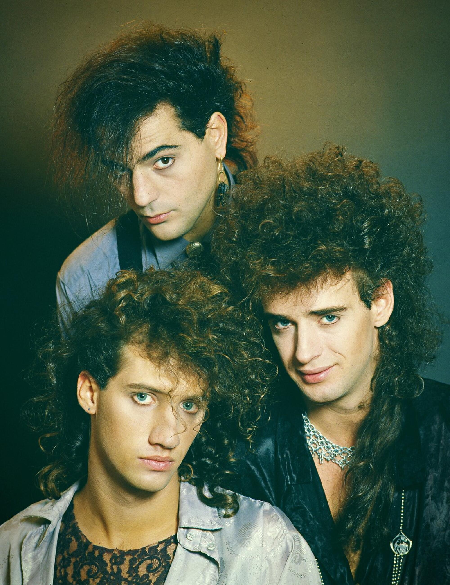
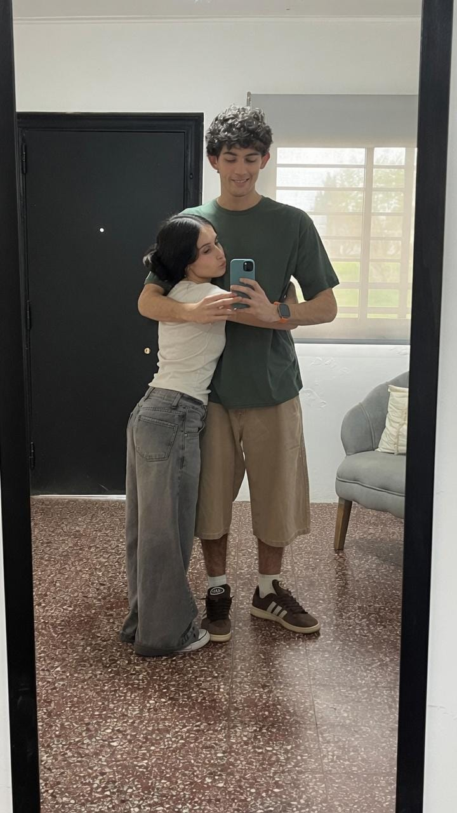

Lautaro en esencia
Fútbol El fútbol es mi deporte favorito con el cual me siento identificado. Desde muy chico, gracias a mi viejo, pude agarrar cariño por este deporte tan lindo y que tantas alegrías trajo a mi vida.
Soy hincha de Boca. Jrs (y con orgullo). Es un deporte que me gusta tanto verlo como jugarlo. De pibe fui a un club de barrio donde jugué por un tiempo, pero ahora ya más de grande juego por diversión con mis amigos y conocidos.
Música Mi género favorito es el rock nacional. Fue un estilo musical con el que conviví mucho desde mi infancia, pero con el que comencé a amigarme más en mi adolescencia.
En Spotify tengo una playlist de largas horas repleta de estas canciones. Mi canción favorita es Entre Caníbales de Soda Stereo

Para ver la discografia de SodaStereo haga click aquí
Videojuegos Tuve la suerte de que mis papás siempre me dieron la posibilidad de jugar videojuegos desde muy chico, una de mis pasiones que me acompañan desde hace rato.
Uno de los juegos que más me enganchan es el FIFA, y juego a diario con mi hermano y amigos de manera online.
Series Me encantan las historias largas que se transforman capítulo a capítulo. Entre mis favoritas están The Office y Rick y Morty .
Mi encuentro con lo eterno Ahora quiero mostrar otra cara de mi vida espiritual y personal: mi relación con Dios.
Desde siempre fui criado en un hogar cristiano, acompañado por mis padres y hermanos. Fue un lugar donde crecí y aprendí a relacionarme con la Palabra de Dios. Allí también me hice de amigos con los que sigo compartiendo y aprendiendo en la vida cristiana.
Si bien nací rodeado de estas creencias, no siempre me mantuve firme en mi fe. Durante mi adolescencia tambaleé y me encontré en un dilema existencial sobre el verdadero significado de la vida: quién era, qué buscaba, para qué existía. Ese vacío me llevó más de una vez a cuestionar la vida misma.
Pero un día Él volvió a tocar la puerta de mi corazón y pidió entrar. Pasaron los años, y aunque atravesé complicaciones y muchos cambios, hubo algo que nunca cambió: el espacio que Dios tiene en mi vida.
Hoy vivo mis días para servirle y honrarle. Él fue capaz de mirar lo más profundo de mi alma y llenarme con su amor, darme un propósito y transformar lo que antes era.
Mi deseo para el futuro es poder ser pastor de mi congregación y enseñar al mundo la verdad que es Cristo. Porque en Él encontré no solo perdón, sino también vida, propósito y eternidad.
Iglesia Cristiana VidaSobrenatural (23 e/ 66 y 67), iglesia en la cual sirvo y me congrego.
Una historia en construcción Por último, en esta sección quiero compartirte algo que me estuvo atravesando en los últimos meses: mi relación personal con quien hoy es mi novia, Renata Montini.

El 17 de julio comencé una relación con esta hermosa mujer. Hace dos meses iniciamos un camino que me cambió por completo y que me enseña todos los días algo nuevo.
Si me hubieran preguntado hace un tiempo sobre tener pareja, probablemente habría respondido que prefería enfocarme en otras cosas o que no estaba preparado para semejante responsabilidad. Con el tiempo entendí que la vida nunca te prepara de manera perfecta para amar a alguien y querer formar parte de su vida. Pero con Rena me pasó algo distinto: pude salir de ese “yo” que tantas veces se interpone entre nosotros, para aprender a amarla y compartir este amor por Cristo que nos enciende y nos impulsa a más
La realidad es que uno nunca sabe hasta dónde puede llegar una relación, cuánto puede durar o qué puede suceder en el camino. Pero de algo estoy seguro: quiero amarla por mucho tiempo. Por eso deseo seguir construyendo esta historia junto a ella, hasta que Dios diga.
FIN.